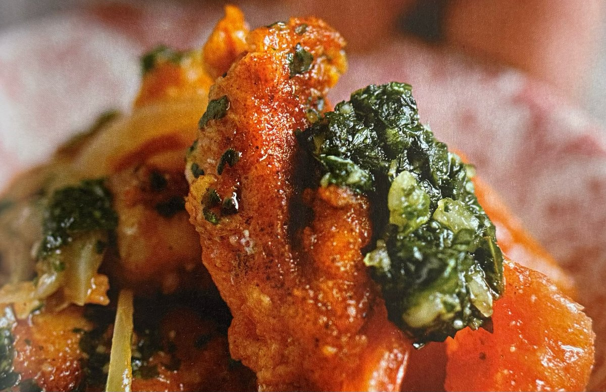

Tajine de lotte aux 3 tomates
Ingrédients
6×
- 700 g de tomates
- 1 gousse d'ail
- 2 oignons
- 3 c. à s. de farine
- 3 c. à s. de paprika
- 1.2 kg de queue de lotte
- 3 c. à s. d'huile d'olive
- 3 c. à s. de pistou
- 200 g de tomates confites
- 100 g de tomates séchées
- sel
- poivre
- 1 citron
- quelques feuilles de basilic

Préparation
Étape 1
Monder 700 g de tomates : 30 sec dans l’eau bouillante, puis sous l’eau froide, et retirer la peau. Les couper en quatre et les épépiner.
Étape 2
Peler et émincer 1 gousse d'ail et 2 oignons.
Étape 3
Mélanger 3 c. à s. de farine et 3 c. à s. de paprika. Y enrober 1.2 kg de queue de lotte coupée en cubes, puis les dorer dans la cocotte avec 3 c. à s. d'huile d'olive.
Étape 4
Ajouter 3 c. à s. de pistou, l’ail, les oignons, les tomates, 200 g de tomates confites et 100 g de tomates séchées. Ajouter du sel et du poivre.
Étape 5
Couvrir et laisser mijoter 20min à feu moyen. Ajouter le jus d’1 citron, rectifier l’assaisonnement et parsemer de quelques feuilles de basilic ciselées.
Résumé
700 g de tomates
Monder épépiner
1 gousse d'ail
2 oignons
émincer
3 c. à s. de farine
3 c. à s. de paprika
1.2 kg de queue de lotte
3 c. à s. d'huile d'olive
enrober dorer
3 c. à s. de pistou
200 g de tomates confites
100 g de tomates séchées
sel
poivre
1 citron
quelques feuilles de basilic
laisser mijoter 20min